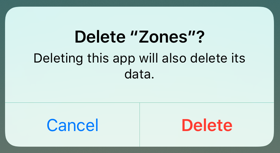
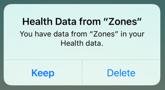

The workout datas recorded by Zones is saved in Apple Health.
We don't have your record in any other server.
You can delete all data by deleting the app.
Please note that you can not be restore health data deleted from Apple Health.
If you delete the app, your workout record will remain.
If you want to delete all your Zones workout records, follow the steps below.
Please note that deleted data cannot be restored
You can choose whether to keep the workout records in the dialog that appears when you delete the app.
When trying to delete Zones iPhone app, the following dialog will be displayed.

If you select "Delete", the following dialog will be displayed.

Please select "Keep" if you want to keep the workout datas recorded with Zones.
If you select "Delete", all workouts recorded by Zones will be deleted.
You can not restore datas if you delete it.
Thank you for your attention.
(You can not restore "healthcare data only" using backup of iCloud or iTunes)
Please migrate your datas using iPhone backup.
Please refer to Backing up Apple Healthcare Information for how to backup.
If you use iTunes's backup, please check "Encrypt iPhone backup".
If you already purchased PRO, you can restore purchases.
Please check Restore PRO purchase.